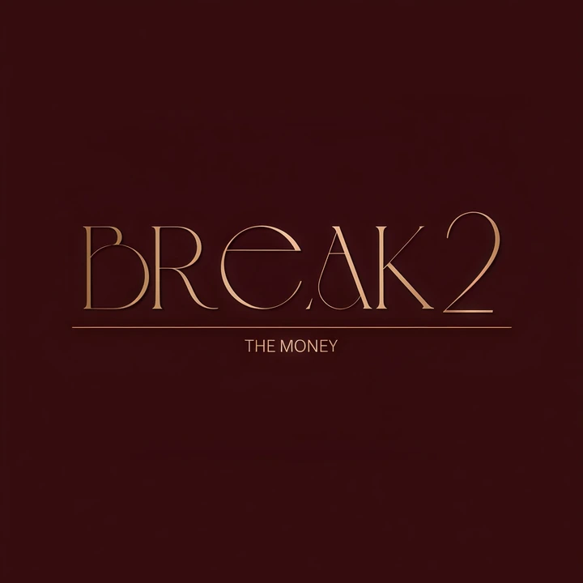

01
START HERE
Broker คืออะไร และทำหน้าที่อะไร
เข้าใจบทบาทของ broker และข้อมูลบัญชีก่อนเลือกใช้งาน เพื่อแยกให้ออกว่าอะไรคือหน้าที่ของระบบ และอะไรคือการตัดสินใจของเรา
BREAK 2 THE MONEY / BY IRIS
ไอริสได้จัดเตรียมความรู้ เครื่องมือ และสิ่งสำคัญที่ช่วยให้คุณเริ่มเทรดได้ ก่อนค้นพบเส้นทางการเทรดของตัวเอง
BREAK 2 THE MONEY
ไอริสสร้างพื้นที่นี้เพื่อรวบรวมข้อมูลพื้นฐาน คู่มือ และขั้นตอนที่จำเป็นไว้ให้คุณอ่านง่ายขึ้น เลือกดูเฉพาะหัวข้อที่ตรงกับสิ่งที่กำลังสงสัย แล้วค่อยไปต่ออย่างชัดเจนทีละเรื่อง
รู้จักแนวคิดของไอริสเส้นทางแนะนำ / ไอริสช่วยจัดลำดับ
ไม่ต้องอ่านทุกอย่างพร้อมกัน เลือกสถานะที่ตรงกับตัวเอง แล้วไอริสจะช่วยจัดลำดับเรื่องที่ควรรู้ก่อน
เส้นทางแนะนำสำหรับคุณ
คุณยังไม่ต้องรีบเลือกบริการหรือเครื่องมือ เริ่มจากคำศัพท์ พื้นฐานตลาด และการมองความเสี่ยงให้เป็นก่อน
ใช้ไฟล์นี้เพื่อ
เหมาะกับคนที่อยากเริ่มแบบมีระบบ ไม่ต้องไล่เปิดหลายลิงก์ตั้งแต่วันแรก
E-BOOK / ไฟล์เริ่มต้นจากไอริส
ถ้าวันนี้คุณอยากเริ่มเข้าใจการเทรดกับไอริส ไอริสมี E-book สำหรับผู้เริ่มต้นให้เป็นไฟล์แรก เพียงฝากคำตอบสั้น ๆ ไว้ให้ไอริสรู้ว่าคุณกำลังอยู่ตรงไหนและอยากไปต่อแบบไหน เพื่อให้ไอริสดูแลคำถามของคุณได้ตรงจุดมากขึ้น
ตอบ 4 คำถามสั้น ๆบอกไอริสว่าคุณอยากเริ่มจากเรื่องไหน
สร้างข้อความสำหรับ LINEระบบจะรวมคำตอบของคุณเป็นข้อความเดียวให้พร้อมส่ง
ทัก LINE หาไอริสเปิดแชทไอริสพร้อมข้อความที่เตรียมไว้ แล้วกดส่งใน LINE
NEXT STEP / LINE OA
EBOOKข้อความจะขึ้นต้นด้วย keyword นี้เมื่อกดปุ่มด้านล่าง LINE จะเปิดแชทของไอริสพร้อมข้อความที่คุณตอบไว้ ให้กดส่งใน LINE อีกครั้งเพื่อยืนยัน
ทัก LINE หาไอริสพร้อมข้อความ02 / เลือกคำตอบ
กดหัวข้อที่ตรงกับคำถาม แล้วคำตอบหรือขั้นตอนที่เกี่ยวข้องจะขึ้นมาให้ทันที
BREAK 2 ANSWER DESK
ตอนนี้ไอริสจัดหัวข้อหลักไว้ให้เลือก เพื่อให้คุณไม่ต้องเดาคำค้นเอง
LEARN / ARTICLE LIBRARY
ไม่ต้องรีบเก่งทุกอย่างในวันเดียว แค่เลือกเรื่องที่ตรงกับจุดที่คุณกำลังติด แล้วให้ความเข้าใจพาคุณไปทีละขั้น
START HERE
เข้าใจบทบาทของ broker และข้อมูลบัญชีก่อนเลือกใช้งาน เพื่อแยกให้ออกว่าอะไรคือหน้าที่ของระบบ และอะไรคือการตัดสินใจของเรา
SETUP GUIDE
เช็กลิสต์ตั้งแต่ดาวน์โหลด ตรวจบัญชี ไปจนถึงจุดที่ควรหยุดถามก่อนกดอะไรต่อ
MONEY CHECK
ไม่ใช่เริ่มจากถามว่าฝากเท่าไหร่ แต่เริ่มจากเช็กว่าเงินก้อนนี้กระทบชีวิตประจำวันหรือไม่ และคุณเข้าใจความเสี่ยงแค่ไหน
RISK FIRST
ก่อนคิดถึงกำไร คุณควรรู้ก่อนว่าจะเสียได้แค่ไหน วางขอบเขตอย่างไร และทำไม Stop Loss ถึงเป็นส่วนหนึ่งของแผน
TOOLS
ทำความเข้าใจว่าเครื่องมือมีไว้ช่วยให้เห็นข้อมูลชัดขึ้น ไม่ใช่ตัดสินใจแทนคุณ และไม่ใช่ทางลัดข้ามการฝึก
DISCIPLINE
บันทึกให้น้อยแต่เห็น pattern: เหตุผลก่อนเข้า จุดออก ความเสี่ยง อารมณ์ และสิ่งที่ต้องแก้ในการเทรดครั้งถัดไป
MINDSET
ถ้าคุณเปลี่ยนแผนทุกครั้งที่อยากได้ผลลัพธ์เร็วขึ้น บทเรียนแรกอาจไม่ใช่กราฟ แต่คือการกลับมาดูวิธีคิดของตัวเอง
LEARNING PATH
ดูว่าควรเริ่มเรียนตรงไหน ใช้เครื่องมือเมื่อไร และเมื่อไรที่การมีคนช่วย review จะทำให้คุณเห็น blind spot ได้เร็วขึ้น
ดูผลลัพธ์จาก Answer Desk ด้านบน หรือลองใช้คำสั้นลง เช่น broker, MT5, deposit, risk หรือ journal
05 / Algo Prime Tool Path
เลือกแนวเทรด ดูราคาหลัก แล้วกดเข้าช่องทางที่เชื่อมกับไอริสเท่านั้น เพื่อให้ไอริสดูแลต่อได้ถูกต้อง
ดูภาพรวม 4 ขั้น แล้วแตะภาพย่อยเพื่อขยายอ่านทีละภาพได้
ใช้ปุ่มนี้เท่านั้น เพื่อให้บัญชี Algo Prime และการซื้อเครื่องมือเชื่อมกับการดูแลของไอริสตั้งแต่ต้น
พร้อมเลือกเครื่องมือกับไอริสเมื่อติดตั้งเรียบร้อย กรอกแบบฟอร์มหลังบ้านเพื่อให้ไอริสรับข้อมูลและช่วยดูแลต่อ
ส่งข้อมูลหลังติดตั้ง ส่งเฉพาะข้อมูลที่แบบฟอร์มร้องขอ ห้ามส่งรหัสผ่าน OTP หรือข้อมูลบัตรให้บุคคลอื่นเครื่องมือฟรีใช้ทำความเข้าใจได้ แต่การฝึกให้เห็นภาพควรมีชุดหลักที่ชัดเจน ไอริสแนะนำรอบ 4 เดือนขึ้นไปหรือรายปี เพราะการฝึกต้องใช้เวลามากกว่าการเปิดดูไม่กี่วัน

เหมาะกับคนที่อยากวางระบบจริงจัง ใช้ได้ทั้งมุมทองคำและเทรนด์ ไม่ต้องแยกซื้อหลายชิ้นตั้งแต่แรก
แพ็กหลักสำหรับคนที่อยากมีเครื่องมือหลายมุมในชุดเดียว เหมาะกับการฝึกจริงมากกว่าการลองแบบกระจัดกระจาย
เหมาะกับคนที่พร้อมฝึกต่อเนื่องและยอมเรียนรู้การอ่านโครงสร้างควบคู่กับ Risk
03 / ขั้นตอน ConnextFX
ดูวิธีสมัครทีละขั้น แล้วส่งข้อมูลหลังสมัครให้เรียบร้อย
เปิดคู่มือภาพก่อนเริ่มกรอกข้อมูล
PRIVATE CLASS
กรอกแบบฟอร์มสมัครและชำระเงิน แล้วทัก LINE เพื่อให้ไอริสดูแลขั้นตอนต่อ
GOLD COMMUNITY
เปิดแบบฟอร์มเพื่ออ่านรายละเอียดและเลือกติดตามข้อมูลต่อ
REGISTRATION HUB / รายละเอียดเพิ่มเติม
ทุกเส้นทางจัดไว้เป็นลำดับชัดเจน: อ่านข้อมูลก่อน เปิดลิงก์สมัครหรือซื้อ และกรอกแบบฟอร์มหลังบ้าน เพื่อให้ไอริสรับข้อมูลและพาคุณไปขั้นตอนถัดไปได้ครบ
BROKER ONBOARDING / CONNEXTFX
เริ่มจากดูภาพคู่มือ 7 ขั้น สมัครผ่านช่องทางที่เตรียมไว้ แล้วกลับมากรอกแบบฟอร์มลงทะเบียนเพื่อให้ข้อมูลเข้าหลังบ้าน
ดูภาพทีละขั้น ตั้งแต่เปิดลิงก์ กรอกข้อมูล ยืนยันอีเมล ไปจนถึงเลือกระบบ MT5
เมื่อเข้าใจขั้นตอนแล้ว เปิดลิงก์สมัครและกรอกข้อมูลให้ครบตามหน้าระบบ
เปิดลิงก์สมัครส่งข้อมูลที่จำเป็นให้ไอริสดูแลต่อ เช่น LINE ID, Username ConnextFX, Discord และหลักฐานที่ระบบร้องขอ
แบบฟอร์ม Broker อาจขอให้เข้าสู่ระบบ Google ก่อนกรอกข้อมูลหลังสมัครเรียบร้อย ทัก LINE เพื่อรับข้อมูลเพิ่มเติมและให้ไอริสช่วยดูแลขั้นตอนต่อ
ทัก LINE ไอริสPRIVATE CLASS
เส้นทางเรียนหลักที่พาจากพื้นฐานไปสู่การวางแผนเทรดแบบจริงจัง ก่อนนำเงินไปใช้ในตลาดจริง
ALGO PRIME TOOLS
รวมขั้นตอนซื้อเครื่องมือไว้ในจุดเดียว เพื่อให้ทำตามง่ายและไม่ต้องเปิดหลายลิงก์พร้อมกัน
GOLD COMMUNITY
เปิดแบบฟอร์มสำหรับคนที่สนใจติดตามข้อมูลต่อ โดยยังต้องบริหารความเสี่ยงและใช้วิจารณญาณของตัวเอง
04 / Private Class
ดูโครงสร้างคลาส ราคา และสิ่งที่ควรเตรียมให้พร้อมก่อนสมัครเรียน
BROKER / CONNEXTFX
ConnextFX ใช้เปิดบัญชีบน MT5 ไอริสแนะนำให้เริ่มจากบัญชีที่อ่านง่าย วางแผนเงินให้ชัด แล้วค่อยให้ไอริสช่วยดูขั้นตอนต่อ
ที่มาและความน่าเชื่อถือ
ข้อมูลจาก Connext ระบุว่า Connext LTD เป็น Securities Dealer ใน Seychelles เลขทะเบียน 8434071-1 และได้รับอนุญาตจาก Financial Services Authority (FSA) เลขใบอนุญาต SD155 โดยมีรายชื่อ Connext Ltd อยู่ในหน้า regulated entities ของ FSA Seychelles ด้วย
ไอริสสรุปไว้เพื่อให้เห็นที่มาของ Broker ชัดขึ้น ก่อนเดินต่อในขั้นตอนสมัครและส่งข้อมูลให้ดูแล
บัญชีที่แนะนำสำหรับผู้เริ่มต้น
เหมาะกับคนที่อยากเริ่มจากโครงสร้างที่เข้าใจง่าย ใช้งาน MT5 ได้ครบ และให้ไอริสช่วยจัดขั้นตอนหลังสมัครต่อได้เป็นระบบ
เลือกตัวเลขเพื่อเข้าใจขนาดแผน ไม่ใช่เพื่อรีบเติมเงิน
ไอริสใช้ตัวเลขนี้เป็นกรอบคิดเรื่องแผนและความเสี่ยง ไม่ใช่คำแนะนำเฉพาะบุคคล
Leverage แสดงเป็นอัตราทด ส่วน Spread สรุปเป็น “จุด” เพื่อให้อ่านง่ายขึ้น
Minimum First Deposit $0 / Spread เริ่ม 12 จุด / Leverage สูงสุด 1:2000 / MT5, EA, Hedging และ NBP
Minimum First Deposit $0 / Spread เริ่ม 6 จุด / Commission $6 ต่อ lot แบบ round / Leverage สูงสุด 1:2000 / MT5, EA, Hedging และ NBP
Minimum First Deposit $0 / Spread เริ่ม 16 จุด / Leverage สูงสุด 1:500 / Contract Size 100 / Maximum Lot 30 / MT5, EA, Hedging และ NBP
Minimum First Deposit $0 / Spread เริ่ม 15 จุด / Leverage สูงสุด 1:2000 / ไม่มี Swap 5 วันแรกตามรายละเอียดบัญชี หลังจากนั้นอาจมี management fee
Minimum First Deposit $0 / Spread เริ่ม 14 จุด / Leverage สูงสุด 1:2000 / Maximum Lot 3000 cent lots / MT5, EA, Hedging และ NBP
ข้อมูลบัญชีใช้เพื่อเทียบโครงสร้างก่อนสมัคร ไอริสจะช่วยพาดูอีกครั้งในขั้นตอนจริง
ข้อดีที่ควรรู้
สิ่งที่ต้องรู้ให้ชัด
การเทรด CFDs และ Forex มีความเสี่ยงสูงจาก Leverage เนื้อหานี้ใช้เพื่อการเรียนรู้ขั้นตอนและการวางแผนเท่านั้น ไม่ใช่คำแนะนำการลงทุนเฉพาะบุคคล
PRIVATE CLASS
คลาสนี้ถูกวางเป็นเส้นทางหลักสำหรับคนที่อยากเรียนให้ครบตั้งแต่พื้นฐาน การอ่านกราฟ การบริหารความเสี่ยง จิตวิทยาการเทรด ไปจนถึงการวางระบบในระดับที่จริงจังขึ้น ไม่ต้องไล่ซื้อหลายคอร์สแยกชิ้น แต่เรียนจากภาพรวมเดียวแล้วค่อยฝึกต่อให้เป็นระบบ
ข้อดีของคลาส
สิ่งที่ควรเตรียมให้พร้อม
ระบบที่ดูแล / ภาพรวม
เลือกดูว่าแต่ละส่วนทำหน้าที่อะไร แล้วค่อยตัดสินใจจากความพร้อมจริงของคุณ
01 / STRUCTURED LEARNING
เรียนตั้งแต่พื้นฐาน การอ่านกราฟ การวางแผน ความเสี่ยง และจิตวิทยาการเทรด เป้าหมายไม่ใช่ทำให้คุณจำสูตร แต่ทำให้คุณรู้ว่ากำลังตัดสินใจอะไรอยู่
ถ้าคุณสนใจเส้นทางนี้ ไอริสจะพาดูรายละเอียดก่อนเริ่มเรียนจริงอีกครั้ง
09 / ซิกแนลทองคำ
สำหรับผู้ที่สนใจติดตามข้อมูลซิกแนลทองคำ กรุณาอ่านรายละเอียดและกรอกข้อมูลในแบบฟอร์มก่อน
GOLD SIGNAL REGISTRATION
กรอกข้อมูลเพื่อให้ไอริสรับรายละเอียดและจัดช่องทางติดตามซิกแนลให้ตามขั้นตอน

06 / เกี่ยวกับไอริส
ไอริสสร้างพื้นที่นี้เพื่อคนที่อยากเลิกวนอยู่กับความหวังลอย ๆ แล้วเริ่มพัฒนาทักษะ วินัย และคุณภาพการตัดสินใจของตัวเองอย่างจริงจัง
คุณจะไม่ได้ยินคำว่าทุกอย่างง่าย หรือใครก็ทำกำไรได้ทันที แต่คุณจะได้รู้ว่าควรเริ่มตรงไหน ต้องระวังอะไร และควรฝึกอย่างไรถ้าอยากเดินต่อในระยะยาว
ไอริสโน้ต“ไอริสไม่ได้อยากให้คุณแค่เปิดออเดอร์เป็น ไอริสอยากให้คุณคิดเป็น รับผิดชอบเงินของตัวเองเป็น และพร้อมเดินไปกับไอริสอย่างมีวินัย เพื่อให้คุณเติบโตขึ้นจริง ๆ ในเส้นทางของตัวเอง”
08 / คำถามที่พบบ่อย
คำตอบสั้น ๆ สำหรับคนที่กำลังเริ่มสนใจการเทรดและอยากรู้ว่าควรเตรียมตัวอย่างไร
เริ่มได้ค่ะ ถ้ายังไม่มีพื้นฐาน ให้เริ่มจากการเรียนให้เข้าใจภาพรวมก่อน เช่น กราฟ ความเสี่ยง วินัย และวิธีคิดก่อนลงเงินจริง
เริ่มจากเรียนพื้นฐานให้เป็นระบบก่อน แล้วค่อยเตรียมบัญชี เทรดด้วยเงินที่วางแผนไว้ และให้ไอริสช่วยดูขั้นตอนต่อเมื่อพร้อม
เตรียมค่าเรียนตามราคาคอร์ส และถ้าจะเริ่มเทรดจริง ควรวางแผนพอร์ตประมาณ 1,000 USD เพื่อให้ฝึกบริหารความเสี่ยงได้เห็นภาพ
มีก็ดี เพราะช่วยให้เห็นข้อมูลและจุดสังเกตชัดขึ้น แต่เครื่องมือไม่ได้เทรดแทนเรา พื้นฐาน แผน และการคุมความเสี่ยงยังสำคัญที่สุด
ช่วยเรียงขั้นตอนให้เข้าใจง่ายขึ้น เช่น ควรเรียนอะไรก่อน สมัครบัญชีตรงไหน เลือกเครื่องมือแบบไหน และต้องส่งข้อมูลอะไรหลังเริ่มใช้งาน
TALK WITH IRIS
ส่งคำถามทาง LINE แล้วค่อยเลือกขั้นตอนที่เหมาะกับคุณ
STEP IMAGE / FULL VIEW